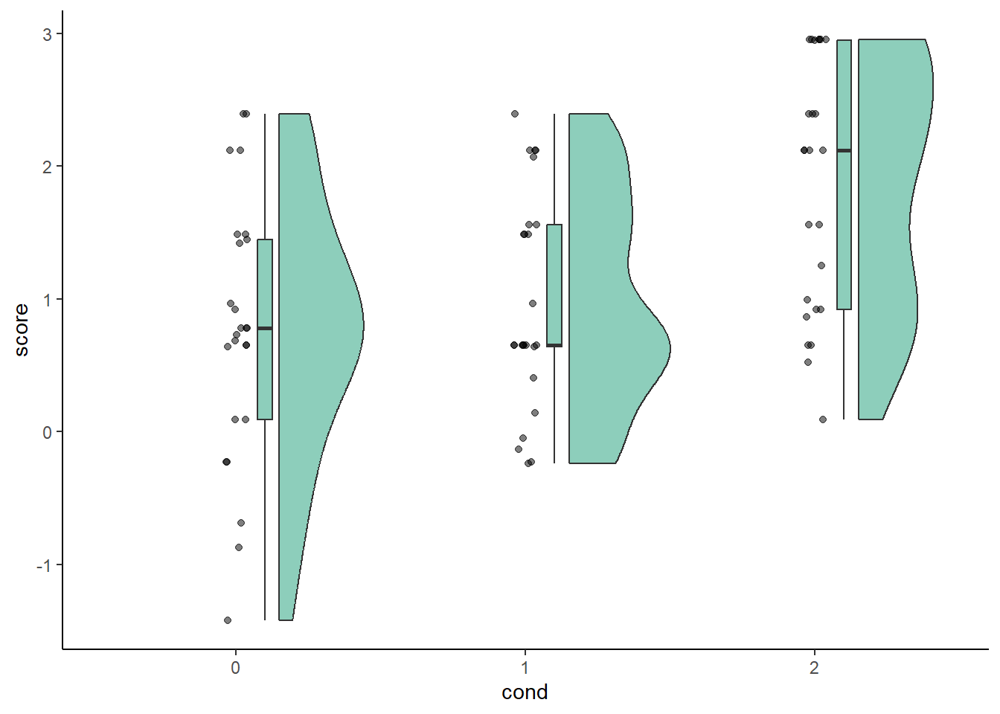

library(ggrain)
library(readr)
library(dplyr)
library(ggplot2)This is the project of my dissertation
📄 Report
📊 Slides
sdt <- read_csv("sdt.csv")
sdt$cond = as.factor(sdt$cond)
sdt$measure = as.factor(sdt$measure)
sensitivity <- sdt %>%
filter(measure == "dprime")
sensitivity$measure = as.factor(sensitivity$measure)
dprimesum <- summarySE(sensitivity, measurevar = "score", groupvars=c("cond", "measure"))
head(dprimesum) cond measure N score_mean score_median sd sem ci
1 0 dprime 25 0.7685624 0.7823470 0.9889596 0.1977919 0.4082225
2 1 dprime 25 0.9793959 0.6523937 0.8077070 0.1615414 0.3334051
3 2 dprime 25 1.8532857 2.1213820 0.9431285 0.1886257 0.3893043ggplot(sensitivity, aes(cond, score, fill = measure)) +
geom_rain(alpha = .5) +
theme_classic() +
scale_fill_brewer(palette = 'Dark2') +
guides(fill = 'none', color = 'none')
17.26
Sign test
data <- data.frame (add = c(34.7, 28.3, 19.6, 25.1, 15.7, 24.5, 28.7, 23.5,
27.7, 32.1, 29.6, 22.4, 25.7, 28.1, 24.3),
w_add = c(31.4, 27.2, 20.4, 24.6, 14.9, 22.3, 26.8, 24.1,
26.2, 31.4, 28.8, 23.1, 24.0, 27.3, 22.9))A sign test is performed, with 3 negative signs and 12 positive signs. The p-value is calculated from a binomial distribution, where the ‘smaller’ sign (negative) has 3 occurrences.
dbinom(3, size=15, prob=0.5)[1] 0.0138855According to the sign test, the difference in mileage per gallon due to the additive is significant at the .05 significance level, but not at the .01 significance level.
Wilcoxon test
The appropriate Wilcoxon test is the Wilcoxon signed rank test, because the two data samples come from repeated observations of the same automobiles.
data$diff = data$add - data$w_add
data$abs = abs(data$add - data$w_add)
data$rank = rank(data$abs, ties.method = c("average"))
data$rank[c(3, 5, 11, 14)] = 6.5The null hypothesis is that the mileage per gallon in the two samples are identical populations.
wilcox.test(data$add, data$w_add, paired=TRUE)
Wilcoxon signed rank test with continuity correction
data: data$add and data$w_add
V = 109.5, p-value = 0.005367
alternative hypothesis: true location shift is not equal to 0At both .05 and .01 significance levels, we conclude that the mileage per gallon of with and without the additive are nonidentical populations. At the .05 significance level, both the sign test and the Wilcoxon signed rank test indicate a difference due to the additive. However, at the .01 significance level, only the Wilcoxon signed rank test indicate a difference due to the additive.
17.34, Wilcoxon rank sum
# Prepare the data
data2 = data.frame(instr = c("A","A","A","A","A","A","A","A","A","A",
"B","B","B","B","B","B","B","B","B","B",
"B","B","B","B"),
grades = c(88, 75, 92, 71, 63, 84, 55, 64, 82, 96, 72,
65, 84, 53, 76, 80, 51, 60, 57, 85, 94, 87,
73, 61))
data2$rank = rank(data2$grades, ties.method = c("average"))R1 = sum(data2$rank[data2$instr == "A"])
R2 = sum(data2$rank[data2$instr == "B"])
N1 = 10
N2= 14
U = N1*N2 + ((N1*(N1+1))/2) - R1
mu = (N1*N2)/2
var = (N1*N2*(N1+N2+1))/12
z = (U-mu)/sqrt(var)
c(U, mu, var, z)[1] 53.5000000 70.0000000 291.6666667 -0.9661411From the z table, we get a critical x value of -1.96, while our calculated z value is approximately -0.966. Thus, at the .05 significance level, we fail to reject the null hypothesis that there is no difference between the two instructors’ grades.
17.51
Kruskall Wallis
# Prepare the data
data3 = data.frame(method = c("1","1","1","1","1",
"2","2","2","2","2",
"3","3","3","3","3"),
grades = c(78, 62, 71, 58, 73,
76, 85, 77, 90, 87,
74, 79, 60, 75, 80))
data3$rank = rank(data3$grades, ties.method = c("average"))# Calculate H
R1 = sum(data3$rank[data3$method == "1"])
R2 = sum(data3$rank[data3$method == "2"])
R3 = sum(data3$rank[data3$method == "3"])
H = ((12/(15*16)) * ((R1^2)/5 + (R2^2)/5 + (R3^2)/5)) - 3*(16)
H[1] 6.54The critical H value for the .05 significance level is 5.991. Thus, at the .05 significance level, we reject the null hypothesis in favor of the alternative hypothesis that there is difference between the three teaching methods. The critical H value for the .01 significance level is 9.21. Thus, at the .01 significance level, we have not enough evidence to reject the null hypothesis that there is no difference between the three teaching methods.
If all five students were the same for each method, the samples would be dependent, where ‘student’ becomes the random factor. Thus, the Friedman test is appropriate in this case.
# Prepare the data
data4 = data.frame(student = c("1","2","3","4","5"),
met1 = c(78, 62, 71, 58, 73),
met2 = c(76, 85, 77, 90, 87),
met3 = c(74, 79, 60, 75, 80))
data4rank = data.frame(student = c("1","2","3","4","5"),
met1 = c(1, 3, 2, 3, 3),
met2 = c(2, 1, 1, 1, 1),
met3 = c(3, 2, 3, 2, 2))# Calculate Chi square
R1 = sum(data4rank$met1)
R2 = sum(data4rank$met2)
R3 = sum(data4rank$met3)
Xsq = (12/(5*3*(3+1)))*((R1^2)+(R2^2)+(R3^2)) - 15*4
Xsq[1] 4.8The critical Chi square value for the .05 significance level is 5.991. Thus, at the .05 significance level, we fail to reject the null hypothesis that there is no difference. The critical Chi square value for the .01 significance level is 9.21. We fail to reject the null hypothesis .# critH for significance level of .01 is 9.21. Thus, we also fail to reject the null hypothesis at the .01 significance level.
The first analysis is testing whether different groups of students undertaking three different teaching methods perform equally in their exam. On the other hand, the second analysis is testing whether the same students perform differently on their exam based on different teaching methods. When different groups of students are subject to different teaching methods, there is difference in grades only at the .05 significance level. When the same students are subject to the three different teaching methods, there is no difference in grades. This might be because in the second analysis ‘student’ is a random factor and thus grades depend more on individual variability rather than teaching method.
17.69
# Prepare the data
firstj = c(5,2,8,1,4,6,3,7)
secondj= c(4,5,7,3,2,8,1,6)# a and b
cor.test(firstj, secondj, method=c("spearman"))
Spearman's rank correlation rho
data: firstj and secondj
S = 28, p-value = 0.08309
alternative hypothesis: true rho is not equal to 0
sample estimates:
rho
0.6666667 The coefficient of rank correlation is 0.6666667, which is a large effect size. However, according to this test, the correlation is not significant: p-value = 0.08309.
# Alternative: Wilcoxon rank sum test method to calculate significance
R1 = sum(firstj)
R2 = sum(secondj)
N1 = 8
N2= 8
U = N1*N2 + ((N1*(N1+1))/2) - R1
mu = (N1*N2)/2
var = (N1*N2*(N1+N2+1))/12
z = (U-mu)/sqrt(var)
c(U, mu, var, z)[1] 64.000000 32.000000 90.666667 3.360672The critical z value at .05 significance is -1.96, while the calculated z value is approximately 3.36. Thus, accroding to the Wilcoxon rank sum test, the rankings from the two judges differ.
# c: Perform the appropriate non-parametric comparison test
shapiro.test(firstj)
Shapiro-Wilk normality test
data: firstj
W = 0.97486, p-value = 0.9332shapiro.test(secondj)
Shapiro-Wilk normality test
data: secondj
W = 0.97486, p-value = 0.9332cor.test(firstj, secondj, method=c("pearson"))
Pearson's product-moment correlation
data: firstj and secondj
t = 2.1909, df = 6, p-value = 0.07099
alternative hypothesis: true correlation is not equal to 0
95 percent confidence interval:
-0.07168044 0.93302248
sample estimates:
cor
0.6666667 The results from part a and c agree.
12.39
The null hypothesis is that there is no difference between the sleeping and the sugar pills. The grand total is 170. The expected values are calculated by multiplying the RowSum with the ColSum and dividing that by the grand total: E1 is 39.7, E2 is 14.3, E3 is 85.3 and E4 is 30.7.
Xsq = (((44-39.7)^2)/39.7) + (((10-14.3)^2)/14.3) + (((81-85.3)^2)/85.3) +
(((35-30.7)^2)/30.7)
Xsq[1] 2.577795DOF = (2-1)*(2-1)
DOF[1] 1The critical value of X square for 1 degree of freedom is 3.84. Thus, at the .05 significance level, we fail to reject the null hypothesis that there is no difference between the two types of pills.
C = sqrt((Xsq^2)/((Xsq^2)+170))
C[1] 0.1939535The coefficient of contingency is 0.1939535. Thus, the variables are independent from each other (i.e., there is no association).
Supplementary problem
The problem involves a contingency table with dependent samples. The P value answers this question: if there is no association between display type and seeing a collision, what is the probability of observing such a large discrepancy (or larger) between the number of the two kinds of discordant pairs? A small P value is evidence that there is an association between display type and seeing a collision.
The two-tailed P value equals 0.1687, which is considered to be not statistically significant. The P value was calculated with McNemar’s test with the continuity correction. Chi squared equals 1.895, with 1 degree of freedom. So we can conclude that there is no difference between displays.